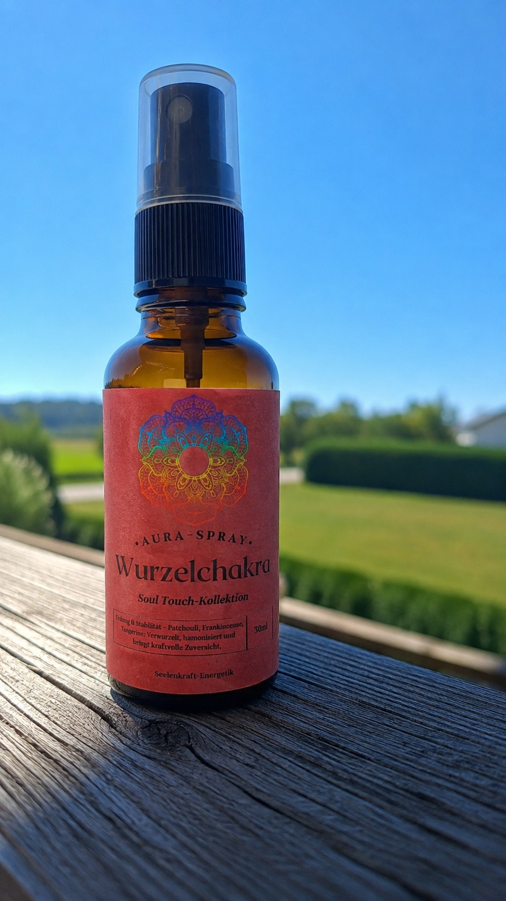

Zugehörige Themen
- Sicherheit und Vertrauen
- Stabilität und Erdung
- Zugehörigkeit und Halt
- Körperbewusstsein und Alltag
- Umgang mit Veränderungen
DEIN PERSÖNLICHER CHAKRA-BEREICH
Das Wurzelchakra steht sinnbildlich für Sicherheit, Stabilität, Erdung und das Gefühl, im eigenen Leben getragen zu sein. Dieser Bereich lädt dich dazu ein, wieder bewusster bei dir anzukommen und deinem Alltag ein verlässliches Fundament zu geben.

Stelle beide Füße bewusst auf den Boden. Atme langsam ein und länger wieder aus. Frage dich ohne Druck: „Was gibt mir heute wirklich Halt?“ Wähle anschließend einen kleinen, verlässlichen Schritt für dich.
„Ich darf ankommen, mich sicher fühlen und meinem nächsten Schritt vertrauen.“
Die aktive Nutzungszeit dieser freigeschalteten Seite wird deinem Konto zugeordnet.